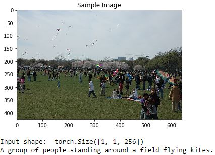
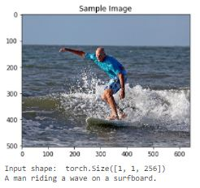
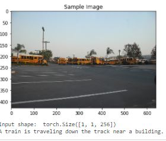
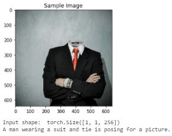

Image Captioner

Image Captioner
This project trains a model to take an input image and convert it into an embedding using a CNN. That embedding matches up to a vocabulary embedding, and uses an LSTM to start generating sentences one word at a time.Take a look here!

This was the capstone for Udacity's Advanced Computer Vision & Deep Learning Coarse. It is written in pytorch, and trained with on the Microsoft Common Objects in COntext (MS COCO) dataset. To learn more about this project, I recommend starting with some of these files:
- 1_Preliminaries.ipynb: Explore preprocessing the data, including: data augmentation, normalization, resizing.
- 2_Training.ipynb: Understanding how the model works, parameter selection, creating embeddings, etc.
- 3_Inference.ipynb3_Inference.ipynb: Using the trained model. Visit this one to see the results!
- model.py : The actual model. Explore the structure of the model, to see how a CNN convert image data into an embedding and then uses an LSTM to build sentences.
Here are a few more image/caption samples (just for fun). See Notebook 3 for even more!
 I ran out of allotted GPU time, so training was stopped a little early. No model is perfect, but it's pretty fun to see what confuses it...
Because of how the vocab embedding works, it will often confuse similar concepts...For example, a person riding a bike will get confused with a person driving a car. In this case, a train is confused with a bus, and I'm guessing the park lines were confused for tracks.
Sometimes it misses things that would stand out to most people...
